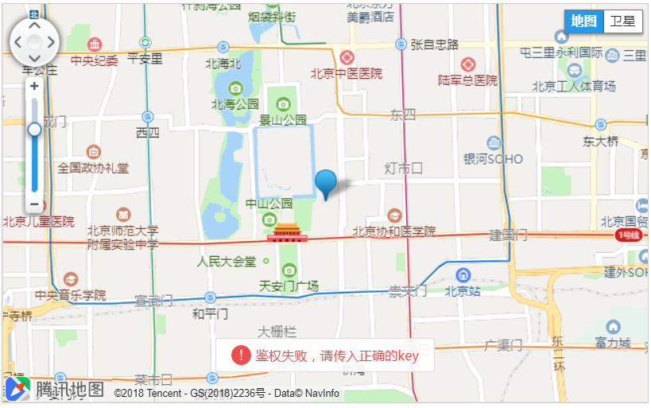

坐标选取默认使用的是腾讯地图（点击查看官网API）， 使用时需要引用以下文件：
坐标选取默认风格，如下图所示：
qq-map.js的代码：
// 当前经纬度
var map_x_col = $("#map_x_col").val();
var map_y_col = $("#map_y_col").val();
var map_x = $("#map_x").val();
var map_y = $("#map_y").val();
// 默认到北京天安门
if(map_x == null || map_x == ''){
map_x = '116.40409';
}
if(map_y == null || map_y == ''){
map_y = '39.912583';
}
var searchService, map, marker;
var init = function() {
var center = new qq.maps.LatLng(map_y, map_x);
map = new qq.maps.Map(document.getElementById('map_canvas'),{
center: center,
zoom: 13
});
setMarker(center);
//添加监听事件
qq.maps.event.addListener(map, 'click', function(event) {
setMarker(event.latLng);
});
var latlngBounds = new qq.maps.LatLngBounds();
//调用Poi检索类
searchService = new qq.maps.SearchService({
complete : function(results){
var pois = results.detail.pois;
if(pois.length != 0){
var poi = pois[0];
setMarker(poi.latLng);
latlngBounds.extend(poi.latLng);
map.fitBounds(latlngBounds);
}
}
});
}
function setMarker(position){
if(marker != null){
marker.setMap(null);
}
marker = new qq.maps.Marker({
position: position,
draggable: true,
map:map
});
qq.maps.event.addListener(marker, 'dragend', function() {
setXy(marker);
});
setXy(marker);
}
function setXy(marker){
$('#'+map_x_col).val(marker.getPosition().getLng());
$('#'+map_y_col).val(marker.getPosition().getLat());
}
function searchKeyword() {
var keyword = document.getElementById("keyword").value;
var region = document.getElementById("region").value;
searchService.setLocation(region);
searchService.setPageIndex(0); //设置检索的特定页数。
searchService.setPageCapacity(1); //设置每页返回的结果数量。
searchService.search(keyword);
}
init();